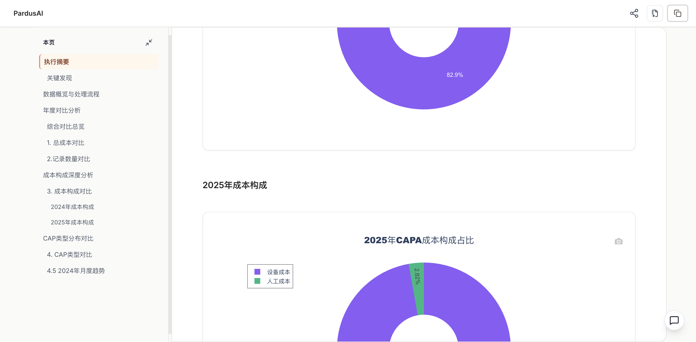
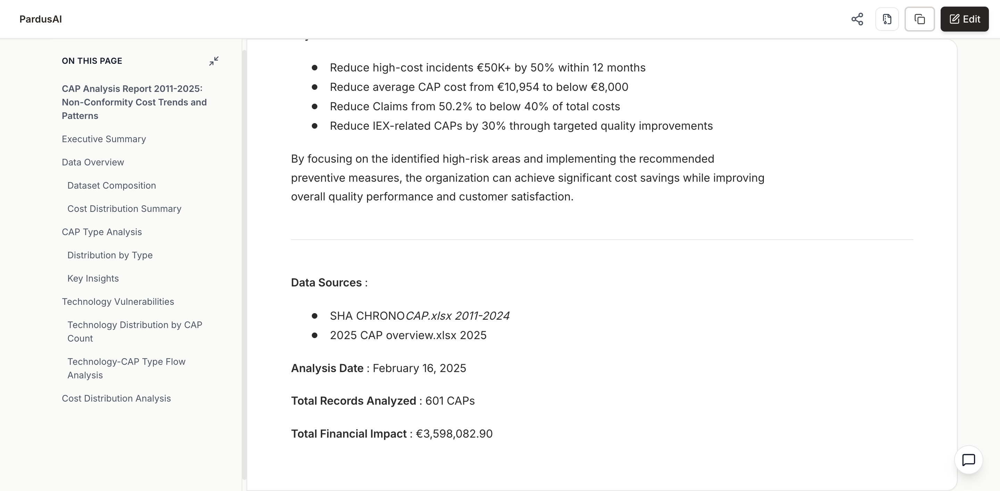

A（原始）/view/e226fa5aa55b9decfd58b42c0c8cb65dbcb46689b1f0b727ec232ee0083ee1c7 ｜ B（重跑）/view/0bbadf267cf4445355d79aab47636826cc511b7cca8411a83d1a7c5863fbe471


| metric | value |
|---|---|
description_removed_ok | True |
A_chart_assets | 15 |
B_chart_assets | 11 |
chart_assets_delta(B-A) | -4 |
A_h2_sections | 11 |
B_h2_sections | 12 |
description.txt2025 CAP overview.xlsxSHA CHRONO_CAP.xlsx执行摘要数据概览与处理流程年度对比分析成本构成深度分析CAP类型分布对比部门表现分析高级可视化分析深度洞察与建议风险预警行动计划总结2025 CAP overview.xlsxSHA CHRONO_CAP.xlsxExecutive SummaryData OverviewCAP Type AnalysisTechnology VulnerabilitiesCost Distribution AnalysisTemporal TrendsCAP Type Evolution by YearCost Hierarchy Analysis2025 CAP AnalysisKey Findings and RecommendationsAnalysis MethodologyConclusion按输出顺序逐行对照。若某一侧缺失图表，会直接显示空位，便于判断差异来源。
annual_total_cost_comparison.jsoncap_cost_heatmap.jsoncap_cost_icicle_2025.jsoncap_cost_sunburst.jsoncap_flow_sankey.jsoncap_flow_sankey_2024.jsoncap_type_comparison.jsoncost_pie_2024.jsoncost_pie_2025.jsoncost_structure_comparison.jsondepartment_comparison.jsonmonthly_trend_2024.jsonrecord_count_comparison.jsonsummary_table.jsontop_issuer_cost_comparison.jsoncap_2025_costs.jsoncap_hierarchy_sunburst.jsoncap_trends_over_time.jsoncap_type_by_year_heatmap.jsoncap_type_distribution.jsoncap_type_to_techno_sankey.jsoncost_by_cap_type.jsoncost_distribution.jsoncost_vs_time_scatter.jsontechnology_distribution.jsontop_10_costs.json